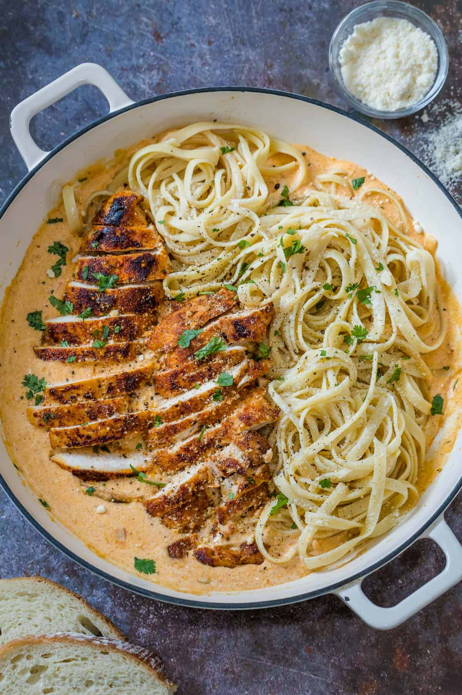

Creamy Cajun Chicken Pasta

Description
Creamy Cajun chicken pasta is a bold and comforting dish that blends the smoky heat of Cajun spices with a rich, velvety cream sauce. Tender strips of chicken are seasoned generously with Cajun seasoning and pan-seared until golden, then combined with sautéed bell peppers, onions, and garlic to build layers of flavor. The sauce, made from heavy cream and parmesan cheese, balances the heat with a smooth, savory richness that clings to every strand of pasta.
This dish is both hearty and satisfying, making it a perfect one-pan meal for weeknights or special occasions. Penne or fettuccine are common pasta choices, as their shape holds the creamy sauce well. Often finished with a sprinkle of fresh parsley and a dash of extra seasoning, creamy Cajun chicken pasta delivers a punch of flavor with every bite, combining spice, comfort, and indulgence in a single bowl.
Ingredients
- 8 ounce linguine pasta
- 2 boneless skinless chicken breast
- 2 teaspoon olive oil
- 2 tablespoon unsalted butter
- 1 1/2 to 2 tablespoon cajun seasoning, divided
- 3 garlic cloves, minced
- 2/3 cup diced tomatoes
- 1 1/2 cup heavy whipping cream
- 1/2 cup grated parmesan cheese
- 2 tablespoon parsley, finely chopped, to serve
Steps
- Bring a large pot of water to a boil and add 1 tablespoon salt. Cook pasta according to package instructions until al dente. Reserve 1/2 cup of pasta water then drain, cover, and keep warm.
- Beat the chicken breasts so that they are even in thickness and season all over with 1 1/2 tablespoon cajun seasoning.
- In a large non-reactive skillet*, heat 2 tablespoon oil over medium-high heat. Once hot, add the chicken and sear on both sides. Turn heat down to low and saute until cooked through and 165F on a thermometer. Transfer to a cutting board, slice into thin strips, and cover to keep warm.
- In the same skillet over medium heat, saute the butter and garlic for 30-60 seconds or until the garlic is fragrant. Add the diced tomatoes and saute another 2 minutes.
- Add in the heavy whipping cream, add remaining cajun seasoning to taste, and parmesan cheese, and bring to a simmer. Season to taste if needed.
- Add the sliced chicken and cooked pasta to the sauce and toss until combined and pasta and chicken are warmed through. Add warm reserved pasta water if desired to thin the sauce. Serve with freshly grated parmesan and chopped parsley.
Home